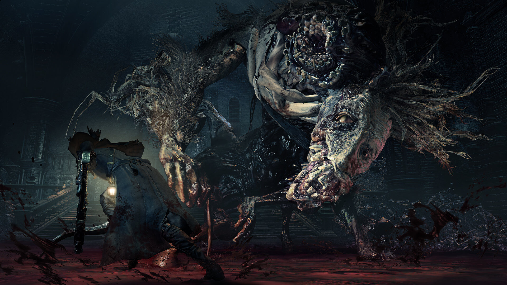

Bloodborne Intro
Introducing Bloodborne, the latest Action RPG from renowned Japanese developer FromSoftware released on 24 March 2015, exclusively for the PlayStation 4 system.
Introducing Bloodborne, the latest Action RPG from renowned Japanese developer FromSoftware released on 24 March 2015, exclusively for the PlayStation 4 system.

Face your fears as you search for answers in the ancient city of Yharnam, now cursed with a strange endemic illness spreading through the streets like wildfire. Danger, death and madness lurk around every corner of this dark and horrific world, and you must discover its darkest secrets in order to survive.